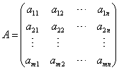
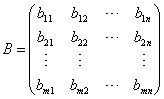
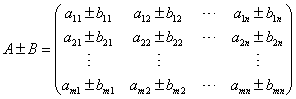
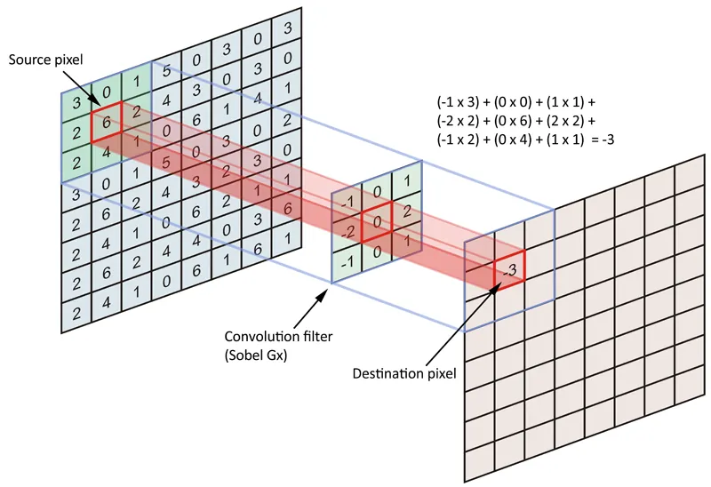
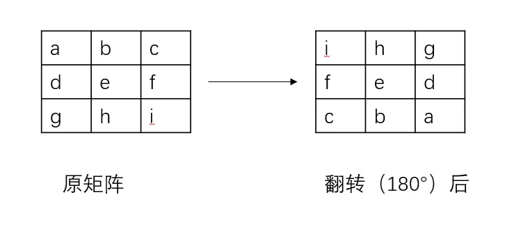
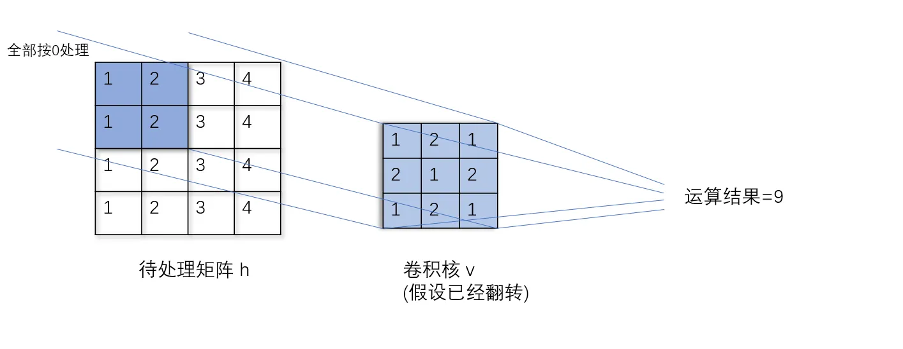
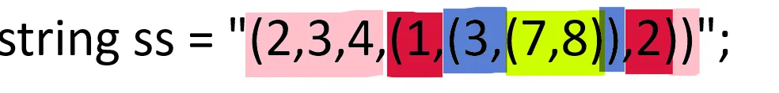
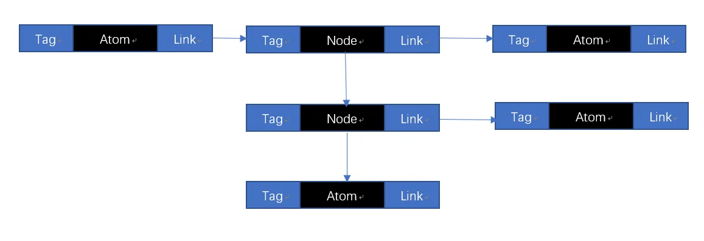

— DATA STRUCTURE / 06
第六章 串、数组、矩阵和广义表
从朴素的模式匹配走到 KMP，再往下是二维数组的行列映射与特殊矩阵的压缩存储。
01 / SECTION
C++字符串常用操作（一）
- 字符串是由单个字符构成的线性串，常以 ASCII 表示；C 语言里它以
'\0'结尾，本质是字符数组。 - 这些操作在
<string.h>（C++ 中为<cstring>）中已有封装，本节讲其手写实现原理。 - 求长度（strlen）：循环计数直到
str[i] != '\0'为止，返回计数 i。例 "Hello My DotCpp.com" 长度为 19。 - 求字符位置（strchr）：从头扫描，
str[i] != '\0' && str[i] != c，返回首次出现的下标（hello 找 l 得 3）。 - 扩展练习：改成返回该字符出现的所有位置，需循环扫描并记录多次命中的下标。
- 子串截取 substr(i, j)：把
[i, j)区间的字符逐个拷到新串，末尾补'\0'；"Hello My DotCpp.com" 取 0~5 得 "Hello"。 - 前缀 prefix(m)：只取前 m 个字符，同样要补结束符；取 5 个得 "Hello"。
- 后缀 suffix(m)：先求总长 len，再从
len-m拷到 len，补结束符；取 3 个得 "com"。 - 关键细节：所有新串末尾必须手动补
'\0'，否则不是合法 C 字符串；suffix 用局部数组char backup[500]而非char *backup，避免返回局部指针的内存错误。
02 / SECTION
C++字符串常用操作（二）
- 连接（strcat）：先让 dest 指针走到自身末尾（
while(*dest)），再把 src 逐字符复制过去，最后补'\0'，并返回原 dest 首地址。 - 比较（strcmp）：逐字符相减，
ret == 0表示相等，ret > 0表示前者大，ret < 0表示后者小；实现上把结果规整为 -1/0/1。 - 比较时要转成
unsigned char，因为 char 的符号位可能被扩展，直接相减在大值字符上会出错。 - 暴力匹配（BF）思想：主串 T 与模式串 P，外层遍历 T 的每个起点，内层逐字符比对 P；失配就回到外层起点的下一个字符重新比。
- 以 n = |T|、m = |P| 计，BF 的时间复杂度为 O(n·m)；现实里 n ≫ m ≫ 2，代价很大。
- 典型最坏情况：T = 47 个 'A' 加 'B'，P = "AAAAAB"，每轮都要比到最后一个字符才失配，约 47×6 次比较。
- 结论：BF 易理解但低效，是引出 KMP 的动机。
03 / SECTION
字符串的KMP算法详解及C/C++代码实现
- KMP（Knuth、Pratt、Morris，1977）的核心优势：失配时不回退主串指针，只按 next 表移动模式串，复杂度由 O(n·m) 优化到 O(n+m)。
- 前后缀概念：字符串 "ABCD" 的前缀为 "A"、"AB"、"ABC"（不含本身），后缀为 "D"、"CD"、"BCD"。
- next 表含义：模式串每一位对应“该位之前的子串中，最长的相等前后缀长度”。
- 例："ABCABDE" 的 next 表为 -1 0 0 0 1 2 0（首位置 -1；也有教程首位取 0，本质等价）。
- 构造规则：以已算好的前一位为基础递推——若当前字符与前缀后一位字符相等，则
next[i] = next[i-1] + 1；否则回退（t = next[t]）继续尝试，仍不匹配则填 0。 - 匹配过程：i 走主串、j 走模式串；
T[i] == P[j]则双指针前进；失配则j = next[j]（j 可能变成 -1，此时 i、j 同时前进）。 - 匹配完成后返回
i - j即模式串首字符在主串中的位置；示例 "ABABABABABD" 中找 "ABABD"，返回 6（第 7 位匹配，从 0 计数为 6）。 - 记忆点：BF 的浪费在于“失配后从头再比”，KMP 用 next 表把已经确认相等的前缀信息复用起来。
- 注意：动态申请的 next 数组用完要
delete[] next。
04 / SECTION
C++中string字符串类型介绍
string是 C++ 的模板类，比 C 的字符数组更安全方便，可自动管理长度。- 头文件
#include <string>——不是<string.h>（C 的头文件）也不是<cstring>（C++ 兼容 C 的头文件）；且需using namespace std; - 初始化六种写法：
string str;空串string str1 = "Hello Dotcpp.com";string str2(str1);拷贝构造string str3(str1, 6);从下标 6 到末尾 → "Dotcpp.com"string str4(str1, 6, 6);从 6 起取 6 个 → "Dotcpp"string str5(5, 'D');5 个 'D' → "DDDDD"string str6(str1.begin(), str1.end());区间构造- 比较：直接用
==、!=、>、<、>=、<=，不必再写 strcmp，运算符重载更符合直觉。 - 连接：直接用
+，如"a" + "b" + "c" + "d"，无需 strcat。 - 常用接口：
length()长度，size()大小（两者等价）empty()判空resize(len, chr)重设长度：多则截断，少则用 chr 补齐，会改变占用空间（如 "HEllo" resize(8,'K') → "HElloKKK"）string与 STL 一脉相承，后续大量题目直接用string比字符数组省心。
05 / SECTION
用数组实现模拟算法C/C++实现（配例题）
- 数组是顺序存储的数据结构：内存连续，随机寻址快，插入删除需整体挪动。
- 与链表对比：数组读取更灵活，链表增删更便捷；但链表有指针开销，实际开发要按场景选型，不必迷信高级结构。
- 模拟不是某种算法，而是一种思维：按题目描述，用简单直观的方式一步步用代码复现过程。
- 以「分糖果」（1431）为例，思路：
- 用数组
kid[i]表示每个小朋友的糖果数，答案计数器ans。 - 循环条件：所有人糖果数相等（
kid[0]与其余逐一比较，全等则 break）。 - 每轮：全体减半（题目保证偶数，无需处理进位）→ 用临时变量
temp = kid[n-1]，每人加上前一个人的数，kid[0] += temp（环形传递）→ 奇数者加 1 且ans++。 - 最后输出
ans。 - 模拟题通用套路：建数组表示状态 → 定循环 → 定退出条件 → 每轮按规则更新 → 计数/输出。
- 推荐练习（均为蓝桥杯真题）：分糖果 1431、蚂蚁感冒 1454、计算器 1560；题库中可按“模拟”标签筛选。
06 / SECTION
矩阵的介绍及乘法运算（附C语言实现代码）
- 矩阵：m×n 个数 aᵢⱼ 排列成的数表，记 Aₘₙ；aᵢⱼ 称 (i,j) 元。19 世纪由凯利提出，源于方程组系数。
- 应用：线性代数、统计分析、物理（电路/力学/光学/量子）、计算机图形学与图像处理（像素矩阵）。
- 乘法前提：A 的列数等于 B 的行数（A 为 m×n，B 为 n×p），结果 C 为 m×p。
- 元素计算：
C[i][j] = Σ A[i][k] * B[k][j]（k 从 0 到 n-1），即“A 的第 i 行 × B 的第 j 列”。 - 实现三重循环：外层遍历 C 的行、中层遍历 C 的列、内层做点积累加，答案矩阵先
memset清零。 - 复杂度 O(m·n·p)，这是朴素矩阵乘法的代价（快速幂、Strassen 等属于进阶优化）。
07 / SECTION
矩阵加减法操作及C语言代码实现
- 加法规则：同型矩阵（行数、列数都相同）对应位置元素相加，
C[i][j] = A[i][j] + B[i][j]，满足交换律 A+B = B+A。 - 减法规则：同样要求同型，对应位置相减，
C[i][j] = A[i][j] - B[i][j]，不满足交换律。 - 实现极简：双重循环遍历 n 行 m 列，把运算符换掉即可；输入、输出也各是一套双重循环。
- 注意：非齐型矩阵不能相加减，代码里应先判断维度是否一致。
- 学习路线建议（原文给出）：基本概念 → 加减乘 → 秩、点阵、运算值 → 翻转等特殊操作 → 卷积核、稀疏矩阵、增广矩阵。
- 进阶练习：用 C++ 类封装矩阵，重载
+ - *运算符；再扩展矩阵幂与快速幂。



08 / SECTION
矩阵扩展-算卷积算法介绍及C语言代码实现
- 卷积：用一个模板（卷积核）在图上滑动逐位置做加权求和，常用于锐化、边缘提取，也是 CNN 图像处理的基础。
- 本节用 Zero padding、unit stride（零填充、步长为 1）的最简形式讲解，不展开复杂公式。
- 运算两步：
- 先把卷积核旋转 180°（倒置）；
- 再把核与原图对应区域逐元素相乘求和，得该位置的输出值。
- 举例（3×3 核）：
0*1+0*2+0*3+0*2+1*1+2*2+0*1+1*2+2*1 = 9，边界按 0 参与计算。 - 代码技巧：二维数组从下标 1 开始存数据，边界留出 0，这样遍历
i=1..n, j=1..m时可直接用org[i-1+a][j-1+b]取 3×3 邻域，天然实现零填充。 - 卷积核输入时可直接倒着读（
for(i=2;i>=0;i--) cin>>ker[i][2]>>ker[i][1]>>ker[i][0];），省去额外翻转。 - 复杂度：n×m 个位置，每个位置做 k² 次乘法，O(n·m·k²)。
- 本质仍是二维数组的遍历应用，理解“滑动窗口 + 加权求和”即可迁移到图像滤波、池化等。



09 / SECTION
广义表的介绍及设计（C语言实现）
- 广义表是线性表的推广，元素既可以是不可再分的原子，也可以是一个子表，因此是多层次的线性表。
- 记法 GL = (a₁, a₂, …, aₙ)，n 为长度（n≥0，n=0 为空表）；aᵢ 为原子或子表。
- 六条重要特性：
- 元素之间有相对次序。
- 长度 = 最外层元素个数。
- 深度 = 所含括号的重数；原子深度为 0，空表深度为 1。
- 可被其他广义表共享 → 再入表。
- 可以是自身的子表 → 递归表（深度无穷，长度有限）。
- 任意非空广义表可分解为表头
head(GL) = a₁与表尾tail(GL) = (a₂,…,aₙ)。 - 因规模不定，广义表用动态链式存储，结点三部分：
tag（标志）+atom/ptr（值或指针，用 union 节省空间）+link/tp（同层下一个结点）。 - 两种结点设计：
- 头尾链表法：LIST 结点用
hp（表头指针）+tp（表尾指针）。 - 扩展线性表（子表法）：
hp指向本层第一个元素，tp指向本层下一个元素。 - 用
enum{ATOM, LIST}定义 tag（0 原子 / 1 子表），用union让原子值与指针共用同一块内存——同一时刻只能存在一种，因此必须严格用 if/else 区分，切勿混用。
10 / SECTION
广义表的创建及C语言代码实现
- 以
(2,3,4,(1,(3,(7,8)),2))为例：每层括号代表下一层，共 4 层，故可用括号级数表示广义表。 - 创建思路：先按
tag判断当前结点是原子还是子表，再按类型分别挂接hp/tp。 - 核心工具函数 sever(str, hstr)：把非空串切分成“表头 hstr”与“剩余表尾 sub”。
- 用
k记录尚未配对的(数量，遇到(则 k++、)则 k--； - 只在
k == 0且遇到,处切分，这样才能跳过子表内部的逗号； - 若一直没找到逗号，则整串作为表头，剩余串置空。
- CreateGList 递归流程：
- 空串 → L = NULL；
- 单个字符 → 建原子结点（
tag = ATOM）； - 否则 → 建表结点（
tag = LIST），先去掉最外层括号s.substr(1, s.size()-2)，再循环：sever 分出表头 → 递归创建p->ptr.hp→ 若还有剩余就新建表尾结点并用q->ptr.tp = p连接 → 最后q->ptr.tp = NULL。 - 求深度 GListDepth（递归）：
- 空表返回 1；原子返回 0；
- 否则沿同层
pp = pp->ptr.tp遍历，递归求每个表头的深度取最大值； - 返回
max + 1（加 1 表示加上当前这一层括号）。 - 易错点：union 两成员不能同时有效；创建时要记得给表尾最后置 NULL；字符串下标与括号配对必须逐一校验。

